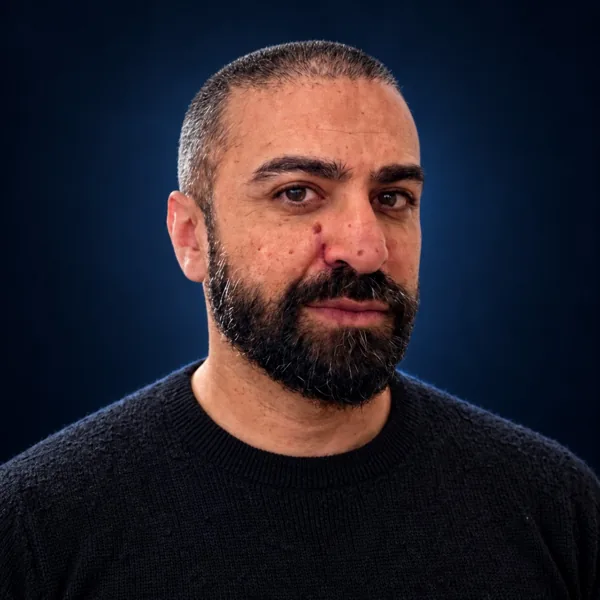

Création de sites internet et services aux entreprises — six offres
Détails du service choisi.
Tâches, résultats attendus et prise de contact.
Un site qui explique votre activité.
Et donne envie de vous contacter.
Pour les entreprises et les indépendants qui veulent un site pour expliquer leur activité et recevoir des demandes.
Un visiteur découvre votre activité : il comprend vos services et trouve comment vous contacter.
- 01Je vous aide à expliquer vos services et à organiser les pages.
- 02Je crée un design personnalisé, adapté au téléphone et à l’ordinateur.
- 03J’ajoute des animations qui illustrent vos services et aident à les comprendre.
- 04Je mets en place les boutons de contact ou de rendez-vous, je les teste et je publie le site.
Un site mis en ligne, avec vos services et un parcours de contact testé.
Mission et tarif sur devis, selon les tâches et le volume convenus.Parlons de votre site.
Un échange de 30 minutes pour expliquer votre projet et préciser les tâches à me confier. Sans engagement.
Je réponds à vos clients.
Je suis leurs demandes.
Pour les boutiques en ligne et les entreprises qui ont besoin de renfort pour répondre à leurs clients.
Un client n’a pas reçu sa commande : je vérifie son dossier, je lui réponds et je suis la suite.
- 01Je réponds aux e-mails et aux demandes d’aide dans vos outils.
- 02Je vérifie les commandes, les livraisons et les retours selon vos procédures.
- 03Je mets à jour chaque dossier et je vous transmets les demandes qui nécessitent votre décision.
- 04Je vous remets un récapitulatif des demandes encore ouvertes et des problèmes fréquents.
Des demandes traitées et un récapitulatif des dossiers qui restent à suivre.
Mission et tarif sur devis, selon les tâches et le volume convenus.Parlons de votre besoin.
Un échange de 30 minutes pour expliquer votre projet et préciser les tâches à me confier. Sans engagement.
Je lis vos avis clients.
Je prépare les réponses.
Pour les entreprises qui veulent suivre les avis publiés par leurs clients et mieux comprendre leurs remarques.
Plusieurs avis parlent d’un retard : je regroupe les remarques et je vous signale le problème.
- 01Je rassemble et classe les avis sur les plateformes choisies ensemble.
- 02Je prépare les réponses aux commentaires et les invitations à laisser un avis honnête.
- 03Je repère les sujets qui reviennent : livraison, accueil, produit ou suivi.
- 04Je vous remets une synthèse et je transmets les problèmes à la personne concernée.
Des réponses préparées et une synthèse des points à améliorer.
Mission et tarif sur devis, selon les tâches et le volume convenus.Parlons de votre besoin.
Un échange de 30 minutes pour expliquer votre projet et préciser les tâches à me confier. Sans engagement.
J’appelle vos contacts.
Je prévois les relances.
Pour les entreprises qui ont des contacts commerciaux à appeler, à mieux comprendre ou à relancer.
Une personne demande des informations : je l’appelle, je précise son besoin et je prévois la suite.
- 01J’appelle les contacts prévus dans le cadre de prospection convenu.
- 02Je pose des questions pour comprendre leur besoin, leur projet et leur calendrier.
- 03Je note la conversation, les questions et la prochaine étape dans votre outil de suivi.
- 04Je fais les relances prévues et je transmets les contacts prêts à avancer à votre équipe.
Une liste de contacts suivis, avec leurs besoins et la prochaine action prévue.
Mission et tarif sur devis, selon les tâches et le volume convenus.Parlons de votre besoin.
Un échange de 30 minutes pour expliquer votre projet et préciser les tâches à me confier. Sans engagement.
Je range vos dossiers clients.
Votre équipe retrouve le fil.
Pour les équipes qui perdent du temps à retrouver les informations d’un client ou les tâches à faire.
Un dossier n’a pas de prochaine action : je complète les informations et j’indique la tâche à prévoir.
- 01Je vérifie et complète les fiches clients dans votre logiciel de suivi, aussi appelé CRM.
- 02Je mets à jour les tâches, les responsables et les dates prévues.
- 03Je note les étapes de travail pour que chacun retrouve les informations utiles.
- 04Je prépare un tableau simple pour voir les dossiers à faire, en cours et terminés.
Des dossiers à jour et un tableau indiquant ce qui est à faire, en cours ou terminé.
Mission et tarif sur devis, selon les tâches et le volume convenus.Parlons de votre besoin.
Un échange de 30 minutes pour expliquer votre projet et préciser les tâches à me confier. Sans engagement.
Les tâches répétitives, en automatique.
Du temps pour développer votre activité.
Pour les indépendants et les équipes qui recopient les mêmes informations, passent du temps à faire des relances ou oublient des suivis.
Une demande arrive sur votre site : les informations alimentent votre dossier client, une tâche est créée et une confirmation est préparée.
- 01Je repère avec vous les tâches répétitives et les endroits où vous perdez du temps.
- 02Je connecte les outils convenus : formulaire, messagerie, tableau de suivi ou logiciel client.
- 03Je construis les étapes automatiques : transmettre une information, créer une tâche ou préparer un suivi.
- 04Je teste le scénario, prévois une alerte en cas d’erreur et vous explique comment le suivre.
Un scénario automatique testé, avec un mode d’emploi et des alertes en cas d’erreur.
Nous choisissons un premier processus et évaluons ensemble le temps passé et les coûts actuels. Mission et tarif sur devis.Qu’aimeriez-vous automatiser ?
Un échange de 30 minutes pour repérer les tâches à simplifier et définir un premier scénario. Sans engagement.
Glissez dans le carrousel pour changer de service, puis choisissez « Voir les tâches ». Faites défiler la page depuis les zones autour du carrousel.
Vous ne savez pas encore lequel choisir ? Découvrez d'abord ma manière de travailler, puis revenez aux offres quand vous le souhaitez.
COMMENT JE TRAVAILLE ↓Vous choisissez un besoin.
Je construis la suite avec vous.
Je suis Moez. Je réalise moi-même les tâches que vous me confiez : créer votre site, répondre aux clients, suivre les avis, appeler vos contacts, organiser les dossiers ou automatiser les tâches répétitives. Nous choisissons ensemble un service ou plusieurs, selon votre besoin.
- Nous précisons votre demande.Ce que vous voulez me confier, les outils utilisés et le nombre de demandes à traiter.
- Je propose un cadre clair.Les tâches, le tarif, la durée et la façon de vous tenir informé.
- Nous décidons de la suite.La mission commence après votre accord sur les tâches et le devis.
Une priorité claire.
Un échange utile.
Vous avez découvert les offres et ma méthode. Si vous souhaitez avancer, nous pouvons définir ensemble une mission adaptée à votre situation.

MoezVotre interlocuteur direct, avant et pendant la mission.Qu’est-ce que je peux prendre en charge ?
Choisissez un service et décrivez votre besoin. Le message est préparé sur votre appareil. Vous pourrez ouvrir votre messagerie ou copier le texte : aucun envoi n’est automatique.
Aucun message n’est transmis directement par ce site. Si votre messagerie ne s’ouvre pas, copiez le texte et écrivez à Contact@moezthabet.com, ou réservez un échange.
Avant de
se lancer.
Travaillez-vous directement avec des entreprises françaises ?
Oui, à distance depuis la Tunisie. Les missions sont définies avec le commanditaire selon le cadre contractuel, les horaires et les outils nécessaires.
Puis-je commencer par une mission courte ?
Oui. Missions ponctuelles et collaborations récurrentes sont possibles selon le périmètre et mes disponibilités.
Quels outils pouvez-vous utiliser ?
Mon parcours inclut notamment Shopify, Gorgias, Zendesk, Trustpilot, Salesforce, HubSpot et Ringover. Toute prise en charge dépend des accès et processus validés.
Quels tarifs pratiquez-vous ?
Je prépare une proposition adaptée au volume, au niveau de responsabilité et à la durée. Les modalités peuvent être horaires ou forfaitaires.
Comment gérez-vous les données clients ?
Dans le respect des consignes, des accès autorisés et du cadre contractuel. Nous définissons les mesures de confidentialité avant toute intervention.